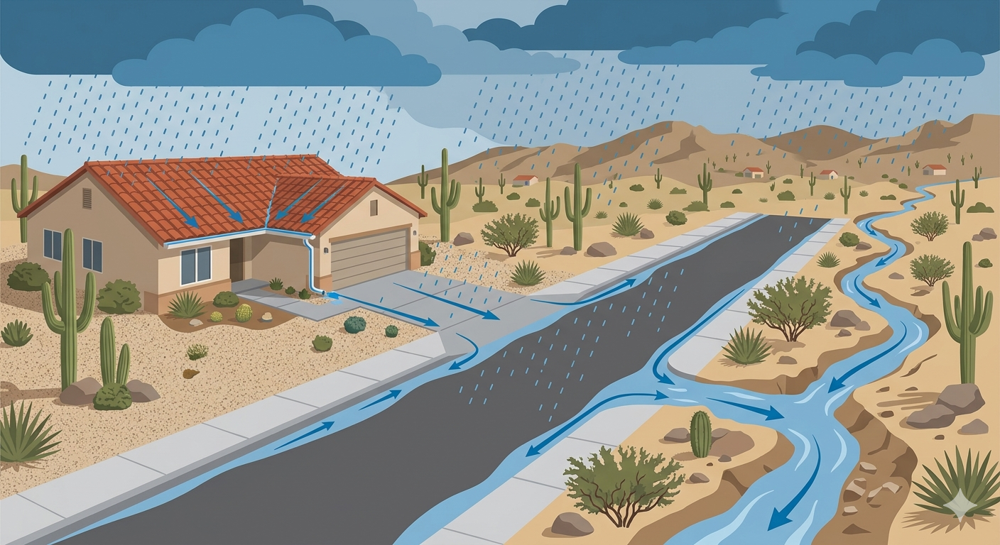

When it rains in Arizona, where does the water go?
As cities grow, more land gets paved over. Rain that once soaked into the ground now rushes across rooftops, driveways, and streets — and ends up flooding roads and neighborhoods. Arizona's flood control districts use computer models to predict how much water will flow and how fast, so they can design drainage systems that keep communities safe.
This project asked a simple question: are the models currently in use the best tools for the job? And could a newer, GIS-based tool called the AGWA Urban Tool offer a better or complementary approach — one that also helps plan for capturing that runoff as a water supply resource?
